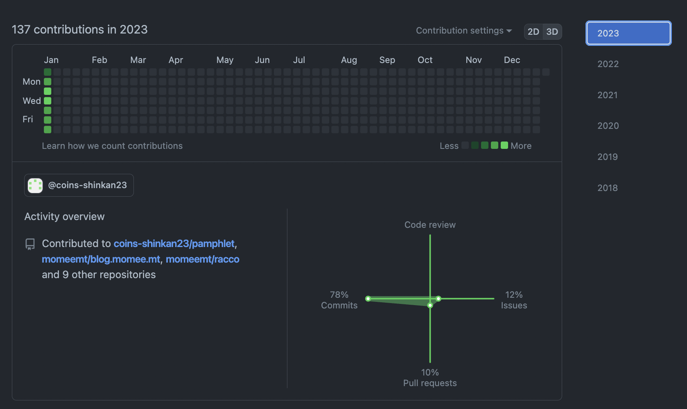

今週の日報
やったこと・勉強したこと
- 高尾山に行った（1日）
- Todoistの完了タスクをBrack形式で取得する実装（1日）
- 新歓パンフのCIを実装（2日）
- 新歓パンフの章個別ビルドを実装（2日）
- actを使ったローカルでのワークフロー実行（2日）
- Fine-grained personal access tokensの勉強（2日）
- GitHub ActionsにおけるDockerのレイヤーキャッシュの勉強（2日）
- GleamをインストールしてFizzBuzzを書いた（2日）
- Rustで始める自作シェル その1の勉強と実装（3日）
- PureScriptのインストール（3日）
- 新歓パンフの全体ビルド実装（4日）
- 領収書を提出した（5日）
- ブログの週報と月報を実装した（5日）
- 新歓パンフの執筆手引きを書いた（5日）
- Gatsbyの勉強をした（5日）
- 鰤の照り焼きと小松菜のおひたしを作った（5日）
- 新歓パンフのdevcontainerを整備した（6日）
- 五目あんかけかた焼きそばを作った（6日）
- Unityチュートリアル Roll-a-Ball（7日）
- The SATySFi bookの第6章までを読んだ（7日）
- 部屋の掃除をした（7日）
GitHub
137 contributions
ほとんど新歓関連。想像の5倍忙しい。先代の凄みを感じている...
読んだ記事
- GitHub Actionsでコマンドの結果を環境変数に設定する
- GitHub ActionsでDockerレイヤーキャッシュを利用したい
- gleam
- Rustで始める自作シェル その1
- SATySFiを使ってみた話
- Gitのワークフローについての私のスタンス
- Gatsby, TypeScript, Emotion, Tailwind, MDXでブログを作っている
- gatsby-plugin-mdx
- Working with Images in Markdown & MDX
- 【Unity】Boltの名前がUnity2021からVisual Scriptingになったのよ
- 卑下をしない: 自分の上にも下にも人がいる
流石にもっと読んだと思うけど、timesに貼ってあった分だけ。
最近はracco-timesみたいなCLIアプリケーションから分報と読んだ記事とやったことなどを記録するとDiscord（timesチャンネル）にも投稿できるし記事も生成できるので筋がよさそうに思えている。来週は隙間時間があったらそれを作ってみようかな。
反省
今週はまあ年始だったのもあり、たくさん実装はしたけどのんびりしていてSorted³で一日の日程を組んだりHabitifyで習慣づけを頑張ったりはできなかった。
一方で、今年の抱負だったPureScriptとかUnityとか掃除とかはできたので、がんばったなあとも思っている。来週はもう少し座学的な勉強の時間を増やしたい、駆け込みでSATySFi本を読み始めたけど全然間に合わなかった[1]。
また洗濯機に洗濯物を詰めすぎてエラー出して1日放置する羽目になったので、今年はなるべく計画的に洗濯してそういう不毛なこと[2]が減らしたい。
週報の書き方が全然わかっていないんだけどこれでいいんだろうか。読んだ記事を手入力でペタペタするのもう嫌なので来週末にはracco-timesがちょっと形になっていることを祈ります。
目標
- 毎日寝る前にSorted³で次の日の日程を組む
- YouTubeを開く日を3日以内に抑える（日月水金は見ない）
- 新歓パンフレットの自分の担当分の執筆を終わらせる
- 新歓パンフレットの環境構築のヘルプを全員分終わらせる
- 去年・一昨年の組版を参考にクラスファイルを実装する
- 掃除をする
- 今あるゴミを全部出す
- 5日以上は22:30までに寝る
- 3日以上は6:00に起きる
- 簡単な3DCGの制作に取り組む
- Create with Code - コードを使ってゲームを作ろうに取り組む
- ジョットクのスライドを完成させる
- AREのプレゼンテーションを提出する
- The SATySFi bookを読み終える
- 詳解Rustプログラミングを読み終える
- racco-timesで分報のDiscord投稿と日報の登録を実装する
- チゲ鍋をつくる
- 1週間分のメニューを考えてから買い物に行く
- 実例によるPureScriptの第4章〜第6章まで取り組む
- 低レイヤを知りたい人のためのCコンパイラ作成入門のステップ16手前まで進める
重い...。がんばりたいと思います。
脚注
- 集中力も
- 真冬の夜に外にある氷のように冷たい水が張った洗濯機に手を突っ込むとか